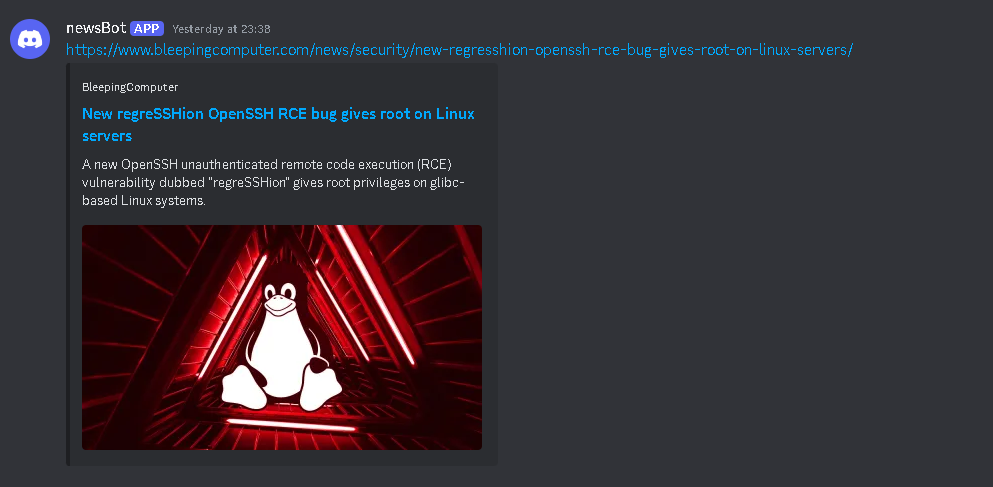

Discord web hooks are awesome, and I really don't think people are using them as much as they should. Discord web hooks are just a URL that can be interacted with using programing languages or even curl. You can post things to it with a simple curl -X 'POST' or you could even post a whole file with curl -X 'POST' -F "file=@file.txt". These will be sent as a Discord message to whatever channel you specify on your own Discord server. This is great because you can send it to a private channel, or invite people to your server and send it to a public channel. Its also great because you can enable notifications, and if you have the mobile Discord app, you will get a notification send directly to your phone. Check out monitorClientSideCode For another example of how this can be incredibly useful for DevSecOps and BugBounty. As for this article, I will show you how to set up a Discord news bot.
Step 1 - Pick a Site to Scrape
You could set up a sophisticated scraper with beautiful soup or any other handy web scraping packages, but for this we will keep it simple and use my personal favorite quick and dirty web scraper: curl + grep
Fist things first though, we need to pick a news site to scrape. BleepingComputer is my go to news site for cybersecurity news. We can filter for what were specifically interested in, in my case I will add /news/security to the URL.
If we curl this down with we will get the entire html content of the page.
curl https://bleepingcomputer.com/news/security
Now we can get all the URL's with:
curl https://bleepingcomputer.com/news/security | grep '<a '
This is still a bit ugly, but I see that all of the links that we are looking for are inside a 'h4' tag, and/or we can just grep for the 'https' pattern:
curl https://bleepingcomputer.com/news/security | grep '<h4> <a' | grep 'https://'
This should get us exactly what we need. Now all we need to do is
- 1. Write the URL's to a file
- 2. Strip the remaining tags
- 3. Add unique URL's to a master list
- 4. Send the URL to Discord if its not in the master list
Step 2 - Python Script
We can do this with a fairly simple Python script:
import re
url_pattern = re.compile(r'href="([^"]+)"')
text_pattern = re.compile(r'>([^<]+)<')
daily_curl_file = '/path/to/the/curl_file'
article_master_list = '/path/to/the/master_list'
def sort():
with open(daily_curl_file, 'r') as f:
unsorted = f.read()
urls = url_pattern.findall(unsorted)
texts = text_pattern.findall(unsorted)
urls_and_texts = dict(zip(urls, texts))
return urls_and_texts
def check(urls):
with open(article_master_list, 'r') as f:
master_list = f.read()
splt = master_list.split()
new_articles = []
for url in urls:
if url not in splt:
new_articles.append(url)
return new_articles
def write(urls):
with open(article_master_list, 'a') as f:
for url in urls:
f.write(url + '\n')
new_list = sort()
new_list_keys = list(new_list.keys())
unique_articles = check(new_list_keys)
unique_articles_dict = {url: new_list[url] for url in unique_articles}
unique_urls = list(unique_articles_dict.keys())
write(unique_urls)
for i,j in unique_articles_dict.items():
print(i)
We start by importing re so we can strip the remaining tags using regex, we will then specify the location of the files. I would recommend using full paths here. You will need full paths if you want to set this as a cron job.
Next we will define 3 functions: sort(), check(), write()
- sort() will strip the tags
- check() will return only the new URL's
- write() will add the new URL's to the master list
Finally we print all the new news article URL's
Step 3 - Putting Everything Together With Bash
Now we just need to connect everything with bash.
#!/bin/bash
send_discord_message() {
local webhook_url="$1"
local message="$2"
local json="{\"content\":\"$message\"}"
curl -H "Content-Type: application/json" -X POST -d "$json" "$webhook_url"
}
curl https://www.bleepingcomputer.com/news/security -L | grep '<h4><a' | grep 'https://' > /path/to/the/curl_file
/usr/bin/python3 /path/to/the/main.py > /path/to/the/post_file.txt
if [ -s /path/to/the/post_file.txt ]; then
while IFS= read -r line; do
send_discord_message "https://discord.com/api/webhooks/123456789/thisisyourwebhookurl" "$line"
sleep 5
done < /path/to/the/post_file.txt
rm /path/to/the/post_file.txt
fi
Lets start by defining a function that will send our URL's to the Discord web hook. We will then execute our simple curl web scraper and write the output to a file. Next we can execute out python script we just wrote to parse all of the ULR's.
And finally we will write the logic to send the message to the web hook. We want to send each URL one at a time, and also wait after sending, we do this so that Discord has time to process the URL and display the thumbnail. If we don't do this, the message will just be a link with no image.
Step 4 - Running as a Cronjob
The Last thing we have to do is schedule this bash script as a cron job.
crontab -e
We will add this line:
0 8 * * * /bin/bash /path/to/bash/script.sh
Now every morning at 8AM we will have our daily cyber security news articles sent directly to our phone.
Conculsion
By following these steps, you've successfully set up a powerful and efficient news bot that scrapes the latest cybersecurity news from BleepingComputer and posts it directly to your designated Discord channel. This automation not only keeps you updated with the latest developments in the cybersecurity world but also allows you to receive timely notifications right on your mobile device.
Remember, this setup is just the beginning. You can further customize and expand this script to scrape other websites, filter different types of content, or integrate with other notification systems. The possibilities are endless, and the more you explore, the more you'll discover new ways to leverage automation in your projects.
Happy hacking, and stay secure!